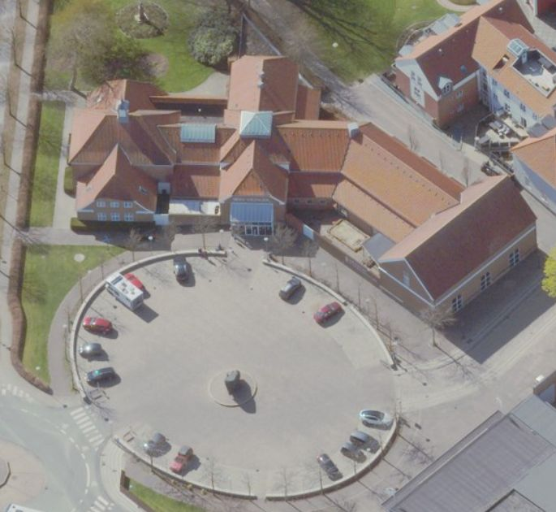
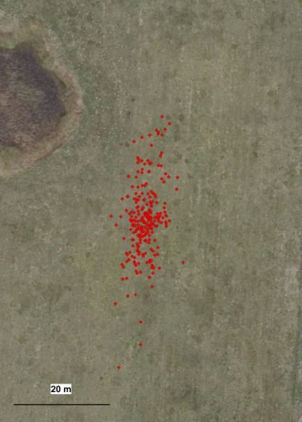
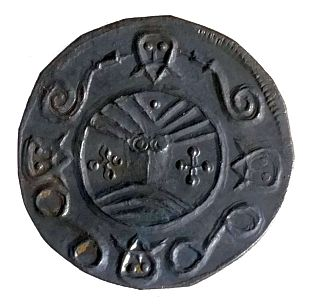
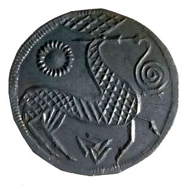
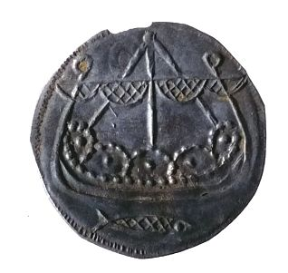
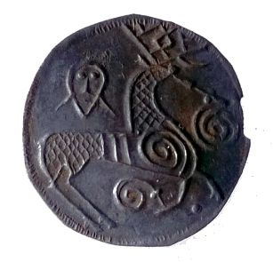
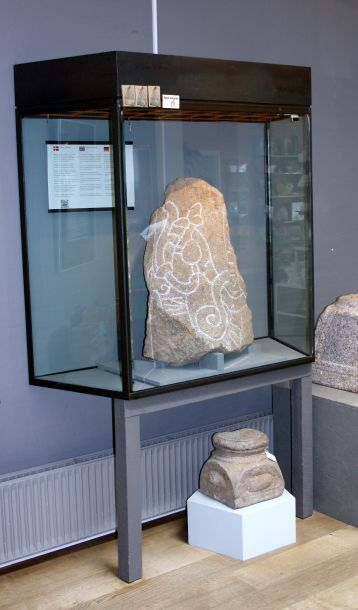
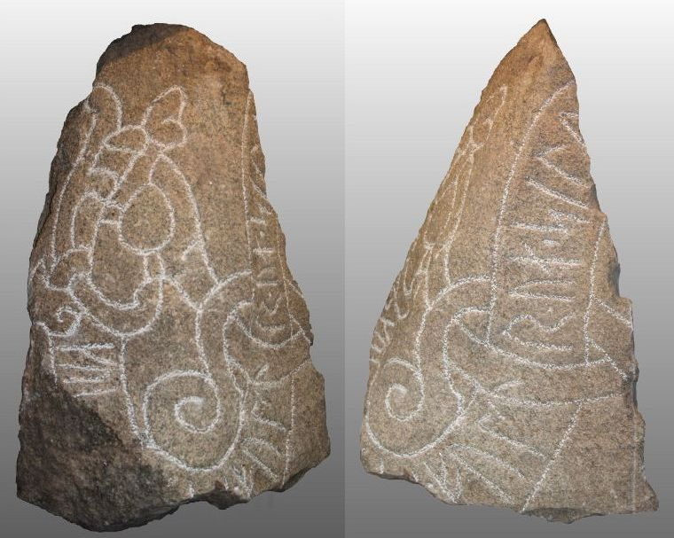

Ribe Runenstein
Feinkörniger Granit
Höhe: ca. 77 cm
Größte Breite: ca. 42 cm
Größte Dicke: ca. 35 cm
Runenhöhe ca.: 11 cm
Runeninschrift :
...des Gläubigen Seele...


Rundgang mit Fotos (Aug. 05)
Impressionen von den Wikingertagen Mai 2000 und Mai 2001
D - Museum Ribes Vikinger - Runenstein(fragment) - Letztes Update 16.09.2025
Listennummer : DK SJy 77
Geo-Daten: N 55°19'40.9" / O 8°46'08.2" - oder - 55.328031 / 8.768664
DK-6760 Ribe, Odins Plads 1
Transliteration: ku----...---- (:) ful(t)rua : sil(u)

Dies ist ein Luftfoto vom 18.04.2023 von Skråfoto, das das Museum zeigt. Skråfoto ist eine Webanwendung, die von Klimadatastyrelsen weltweit kostenlos bereitgestellt wird - Freie Nutzung unter Beachtung der Lizenz: CC BY 4.0 . Die Aufnahmen werden seit 2017 alle zwei Jahre erneuert und neben einer Senkrechtaufnahme wird ein Schrägbild aus jeder Himmelsrichtung angeboten, das man über eine Adresssuche aufrufen kann.
Die Informationen der dänischen Online-Runen-Datenbank zu diesem Runenstein (in dänischer Sprache) finden sich hier.
Über die Webseite "Runes" - ein Forschungsprojekt der Akademie zu Göttingen - kann man diese Informationen zum Runenstein von Ribe abrufen.
12.11.2023
Immer wieder finde ich im Internet Informationen zu Geschehnissen in Dänemark von denen ich noch keine Kenntnis hatte, die aber eigentlich schon Jahre zurück liegen. So war es auch heute, als ich plötzlich auf einen Bericht zu dem Schatzfund von Damhus aus dem Jahr 2018 stieß. Am 14.08.2018 bekamen die Sydvestjyske Museer Wind davon, dass eine äußert seltene Münze in Ribe-Damhus in einem alten Feuchtgebiet aufgefunden worden sei, von deren Typus "KG 4 - Gesichts-/Hirschpfennig nach Brita Malmer" bis dahin nur insgesamt 11 Exemplare bekannt waren, die im frühen 8. Jahrhundert irgendwo in Dänemark geprägt wurden. Am nächsten Tag nahm man Kontakt mit dem Finder - Tommy Lübecker, ein Metalldetektorgänger - auf, worauf sich eine Nachschau vor Ort anschloss. Nach zweitägiger Detektorsuche unter der Leitung des Museums am 15. und 16. August 2018 hatte man 174 äußerst gut erhaltene Münzen gefunden, obwohl sie annähernd 1200 Jahre in der Erde gelegen hatten! Bei 172 handelte es sich um Gesicht-/Hirsch-Pennys, während die letzten beiden auf der Vorderseite ein schönes Wikingerschiff mit Schildern an der Reling und dem bekannten Hirsch auf der Rückseite zeigten. Die gefundenen Münzen wurden kontinuierlich mit Präzisions-GPS vermessen, und es wurde schnell klar, dass die Münzen über eine größere Fläche der Wiese verteilt waren. Sie lagen in einem Umfeld von ca. 50 x 15 m in Form eines länglichen Ovals. Dieses Bild ist recht typisch für Schatzfunde, die durch wiederholtes Pflügen verstreut wurden. Dass die Münzen verstreut liegen, deutet meist darauf hin, dass sie nicht vergraben, sondern einfach auf die Erde gelegt wurden, vielleicht in einem längst verrotteten Lederbeutel. Nachdem man beim Dänischen Amt für Paläste und Kultur Fördermittel für eine archäologische Untersuchung der Stätte beantragt und bewilligt bekommen hatte, machten man sich am Mittwoch, dem 23. Oktober 2018, auf den Weg, die Stätte auszugraben, natürlich unter Beteiligung des Finders und mehrerer anderer Detektorengänger. Darüber fand man zusätzlich 78 weitere Münzen des gleichen Typs - 77 x Gesicht-/Hirsch-Pennys und 1 x Schiff/Hirsch Exemplar).





Urheberrecht/Fotos: Arkæologi på Sydvestjyske Museer - abgerufen 12.11.2023 von https://sydvestjyskemuseer.wordpress.com/2018/10/24/damhus-skatten-en-stor-skat-af-ribe-moenter-fra-800-tallet-ofret-til-mosens-guder
Es fanden sich also insgesamt 252 teils neuwertige, noch glänzende Silbermünzen. Dieser Hort ist ein völlig neuer und bedeutender Beitrag zur Münzgeschichte des 8. Jahrhunderts. Da Münzen vom König ausgegeben wurden, erzählen die Münzen auch von der königlichen Macht, den Konjunkturzyklen und der Wirtschaftspolitik. Zu dieser Zeit herrschten in Dänemark der mächtige König Gudfred und seine Söhne, und sie müssen die Herausgeber der Münzen gewesen sein. Wir können sehen, dass alle Münzen ganz und nicht in Stücke gebrochen oder durchbohrt sind. Dies zeigt, dass sie in einer tatsächlichen Münzwirtschaft verwendet wurden, wie wir heute Geld verwenden, und nicht in einer Gewichtswirtschaft. Man weiß ja bereits, dass es auf dem Königsmarkt in Ribe eine Münzwirtschaft gab, also passt alles wunderbar zusammen.
Der Schatzfund von Damhus oder ein Teil davon wurde anfänglich - 29.10. bis 04.11.2022 - in der Eingangshalle des Ribes Vikinger Museums ausgestellt, und dann später an das Nationalmuseum in Kopenhagen übergeben.
Eintrag vom 09.09.2013:
Am 20.08.2013 konnte ich in Ribe endlich mal wieder das Museum Ribes Vikinger besuchen und dabei erstmals selbst einen Blick auf den Runenstein-Neufund im Original werfen. Er ist im Foyer in einer Vitrine aufgestellt worden. Er besteht aus Granit und ist 77x42x35 cm groß. Wie leicht zu erkennen ist, wurde er leider an mehreren Seiten behauen und ist nur ein kleines Bruchstück. Von der Ausschmückung her erinnert er innerhalb der dänischen Runensteine am ehesten an den großen Jellingstein. Von daher wird er auf die Zeit zwischen 950 und 975 n.Chr. datiert und dem sog. Mammenstil zugeordnet. Er wurde um 1850 im Fundament einer Baumwollweberei in Ribe in unmittelbarer Domnähe eingesetzt. Zu der Zeit hatte er aber bereits Antragungen von Kalkmörtel, so dass er zuvor schon in einem anderen Gebäude als Baustein verwendet worden sein muss. Die Örtlichkeit, an der er in der Wikingerzeit aufgestellt worden war, ist demnach völlig unbekannt.
Die ursprüngliche Abmessung des Steinfragmentes ist unbekannt. Womöglich war er ca. 1,50 m hoch und um 1,00 m breit. Es gibt mehrere Deutungsversuche, darunter einen mit einer dreiteiligen Inschrift innerhalb eines bandförmigen Tierkörpers in einer Wellenlinie. Ein anderer Vorschlag sieht die Inschrift ebenfalls innerhalb eines Tierkörpers, der halbkreisförmig im Bogen nach oben verläuft, angeordnet.
Zur Deutung der Inschrift habe ich bereits unten Ausführungen gemacht. Sie verläuft ausgehend von links mittig nach unten und weiter im Bogen nach oben. Sie weist leider nur einen kleinen Teil des ursprünglichen Textes auf. Es wird vermutet, dass es sich um eine der frühesten christlichen Inschriften mit der Passage "Gott helfe seiner Seele" handelt. Quelle u.a.: die dänische Zeitschrift SKALK, Nr. 2, April 2012, S. 24-30 (im Museum für 20 DKR = ca. 2,70 käuflich zu erwerben). Inzwischen auch Online verfügbar.
Foto von dem Runenstein in der Vitrine

Runenstein - Die beiden Seiten mit der Inschrift (Eigene Fotos - vom Hintergrund freigestellt)

Leserichtung: Linke Seite von oben nach unten, rechts Seite von unten nach oben.
Eintrag vom 15.06.2012:
Bei den aktuellen Dom-Umfeldgrabungen in Ribe fand sich ein spätwikingerzeitlicher Friedhof (ca. 75 Gräber aus der Zeit wohl um 1050) über den im Internet mit Wort aud und Bild hier berichtet wird (leider nur in dänischer Sprache). Die BBC hat die Grabungen im Mai 2012 besucht und wird einen Bericht darüber im Rahmen einer neuen Serie zur Thematik Wikinger bringen.
Eintrag vom 10.12.2011:
Runensteinfragment (Neufund - offenbar vom 26.04.2011) - Listennummer : DK SJy 77
Bei Ausgrabungen in unmittelbarer Nachbarschaft zum Dom (Lindegården) in Ribe wurde in den ursprünglichen Fundamenten eines Hauses von 1850 ein sensationeller Fund gemacht. Es handelt sich um ein ca. 80 cm hohes Runensteinbruchstück. Der Stein ist auf zwei Seiten reich mit Schriftzeichen und spätwikingerzeitlicher Ornamentik in Form einer Schlange oder eines Drachens verziert. Eine erste Datierung wird aufgrund der Verzierung, die im bisherigen dänischem Runenmaterial ohne Vergleich dasteht, auf um 1000 n.Chr. vorgenommen. Die Inschrift ist in die bandförmige Verzierung des Tierkörpers eingebracht. Auf der Seite A beginnt die Inschrift mit den Runen "ku". Diese Runen werden einem Namen zugeschrieben (Ku.../Gu... oder Ko.../Go... oder Kv...). Die nächste lesbare Runensequenz ist "fultrua" auf der Seite B. Dies könnte "ein wahrer Freund" bedeuten. Die letzte Sequenz "sil(u)" steht wohl für "Seele".
Informationen (in dänischer Sprache) und Fotos finden sich hier.
Auf Youtube findet sich ein Video zur Entdeckung des Runensteinfragments (auf dänisch).
Es handelt sich um den ersten Fund eines Runensteins in der Region überhaupt. Seit dem 06.05.2011 ist das Runensteinfragment in Ribe im Foyer des Museums "Ribes Vikinger" ausgestellt.
Leider habe ich das Museum noch nicht besuchen und den Neufund bewundern können (siehe oben - am 20.08.2013 war es aber endlich soweit).
Das https://www.ribesvikinger.dk/de/forside-tysk-2/ liegt genau an der Stelle, an der um das Jahr 700 die erste Stadt des Nordens gegründet wurde. Es liegt mitten im heutigen Ribe, mit schöner Aussicht auf den Riber Å (Fluss) zum Dom hin. Im Museum wird die Geschichte Ribes von der Wikingerzeit über das Mittelalter bis hin zum Jahre 1700 auf 2500 m² erzählt.
Tausende von Ausgrabungsfunden im umliegenden Gebiet zeugen vom Leben der Wikinger und ihrem Handel in ganz Europa. Zwischen 800 und 1100 wird die Stadt mehrmals mit starken Wallanlagen befestigt.
Im Museum befindet sich ein Museumsladen, in dem eine große Auswahl an Büchern, Ansichtskarten, Kopien von Schmuck, Gebrauchsgegenstände und anderem, das eine Beziehung zur Ausstellung hat, angeboten wird. Außerdem ist ein kleines Café angegliedert, in dem Erfrischungen, kleiner Imbiss, Kaffee, Kuchen u.a. erhältlich sind.
Das Museum verfügt auch über einen Multimediaraum "Wotans Auge", in dem man per Computer mehr über die Wikingerzeit erfahren kann. Im Vortragssaal wird mehrmals täglich der Videofilm "Ribes Wikinger" gezeigt.
C - Vikinge Center Lustrupholm
Geo-Daten: N 55°18'35.5" / O 8°45'56.5" - oder - 55.309856 / 8.765683
DK-6760 Ribe, Lustrupvej 4
Ribe VikingeCenter - Internetauftritt
Die ansprechende Webseite ist auch in deutscher Sprache päsent, so dass darüber alle Informationen abgerufen werden können.
Auszug daraus:
Gelebte Geschichte
Reise 1300 Jahre in der Zeit zurück und triff u.a. den Schmied, den Münzmacher, die Völva, die Frau des Langhauses, den Sklaven, den Krieger, den Falkner, den Tischler, den Schmuckhändler, den Bauern und alle Tiere auf dem Hof in Wikinger Ripa.
Ribe VikingeCenter ist ein Erlebniscenter mit authentischen Rekonstruktionen Anno 710-980 aus Ribe, Dänemarks älteste Stadt.
Mache einen Spaziergang über den Marktplatz, Anno 710.
Besuche die geschickten Handwerker und die Wikingerboote der Handelsleute in Ripa Hafen, Anno 750.
In Ripa Stadt, Anno 825 kannst du die Wikingerhäuser besuchen wie z.B. das große Thinghaus.
Die Ansgar Kirche, Anno 860 ist eine sehr schön dekorierte Holzkirche und der Gutshof, Anno 980 ist ein landwirtschaftlicher Betrieb mit vielen Tieren und ein prächtiges Langhaus für den Großbauern und seiner Familie.
Am Ringwall, Anno 980 findest du die Krieger und Bogenschützen, wo du auch selbst die Kriegerübungen mitmachen kannst.
Alljährlich am ersten Wochenende im Mai findet hier Dänemarks größter Wikingermarkt statt. Dann ist der Handelsplatz von Zelten übersät und Menschen unserer Zeit, die sich in Wikinger-Gewänder gehüllt haben und die aus den verschiedensten Ländern angereist sind, lassen das mannigfaltige Handwerk der damaligen Zeit vor unseren Augen wieder aufleben. Zu bestimmten Zeiten kommen auf einem Schaukampfplatz raue und wilde Gesellen, aber auch zarte Frauenzimmer mit ihren Waffen zusammen und kämpfen gestenreich gegeneinander.
Über den Sommer hinweg kann man viele interessante Aktivitäten selbst ausprobieren - Bogenschießen, Holz-Dübel herstellen, Brot backen, Mehl mahlen u.a. Dazu werden täglich Falknervorführungen mit den Greifvögel angeboten.
Im August finden hier außerdem die dänischen Meisterschaften im Bogenschießen statt.
Über diese Unterseite des Internet Auftrittes kann man sich die einzelnen Gebäude im Areal erklären lassen (in deutscher Sprache).
Außerdem ist in den Internetauftritt die Rubrik "RIPA - eine Dokumentarfilmserie" integriert. Die Filme sind in dänischer Sprache - meist mit englischen Untertiteln - gehalten und sehr anschaulich und informativ.